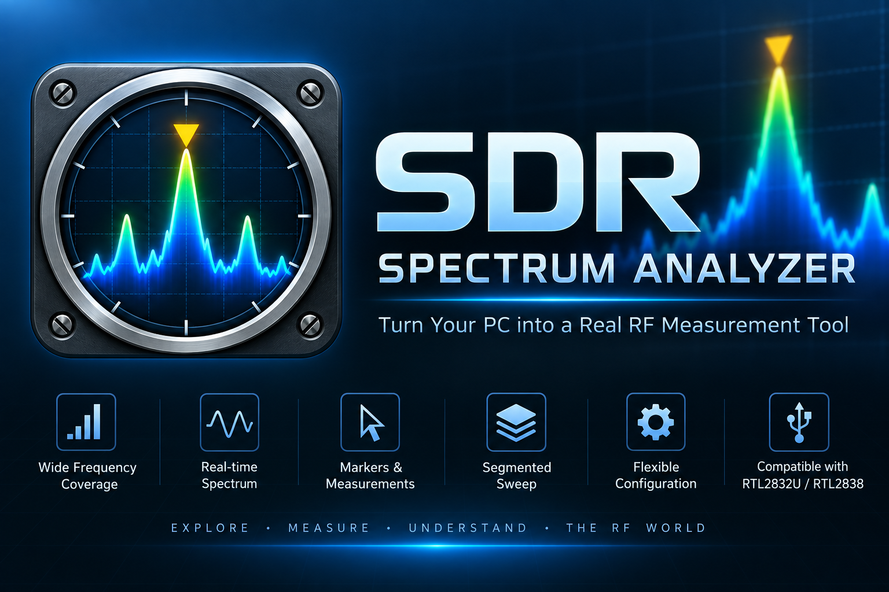

SDR Spectrum Analyzer
A Windows desktop application for RF spectrum analysis using compatible USB software-defined radio hardware. Explore, measure, and understand the RF spectrum from your PC.
 Free to download · Optional Full Version available as a
one-time purchase · No subscription
Free to download · Optional Full Version available as a
one-time purchase · No subscription

Choose the Version That Fits Your Needs
SDR Spectrum Analyzer is free to download and use for fixed-frequency spectrum viewing. The optional Full Version unlocks advanced measurement and wideband analysis capabilities.
Free Version
Tune the center frequency across 24–1766 MHz and perform continuous fixed-frequency spectrum analysis with a 1.600 MHz span. The Free Version provides a practical way to view live RF spectrum data using compatible USB SDR hardware.
Free to download and use.
Full Version
Unlock adjustable span and measurement settings, wideband and segmented sweep, markers, channel power, calibration, Max Hold, frozen reference traces, Auto Scale, and CSV export.
Optional one-time purchase through Microsoft Store. No subscription.
See SDR Spectrum Analyzer in Action
Real-time spectrum analysis using compatible USB SDR hardware. The demonstrations below show advanced capabilities available with the Full Version.
30 MHz Wideband Sweep
30 MHz span · 20 MHz channel bandwidth
2 MHz Detailed Spectrum Analysis
2 MHz span · 500 kHz channel bandwidth
User Guide
Complete operating instructions for Free and Full Version features, spectrum measurements, traces, markers, wideband sweep, calibration, configuration, and troubleshooting.
Open User Guide →Support
Troubleshooting information, hardware guidance, and support requests for SDR Spectrum Analyzer.
Open Support →Privacy Policy
Learn how SDR Spectrum Analyzer handles application, measurement, hardware, and user data.
Read Privacy Policy →End User License Agreement
License terms, permitted use, measurement limitations, warranties, and other applicable conditions.
Read EULA →